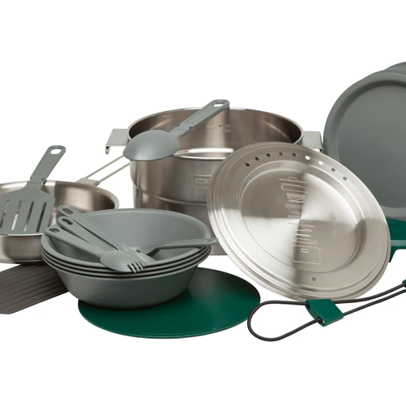

Our Campers
Our campers are fully equipped for your adventure. They are easy to drive, fast and capable brand new 4x4 machines. You can comfortably drive and sleep 4 people in the campervans. The VW California line has been iconic for almost 60 years, and that's why we think it is the best choice to enjoy our beautiful Bulgarian lakes, mountains and beaches.
-

Cutlery
We have selected the finest cutlery from Victorinox and Stanley. There is a full set for you containing: Stanley full kitchen base: 18/8 Stainless Steel pot (3.5 L), Vented lid, 3-ply frying pan, Cutting board, Spatula with extending handle, Serving spoon with extending handle, 4 Plates (15.2 cm diameter), 4 Bowls (.65 L), 4 Sporks, Dish drying rack, Trivet, Locking bunge Victorinox set: 4 forks, 4 spoons, 1 kitchen knife, peeler, 1 swiss army knife, cutting board
-

Miles
Miles and smiles sounds nice. So our campers are not limited in range or countries you can visit. Think about the adventure ahead and we will take care that you are well prepared to enjoy it to the maximum. If requested we can suggest good campings along your route or scenic places you should visit and camp.
-

Bedding
We have equipped our campers with high quality bedding for 4 which includes: 2 double down sheets 2 double cover sheets 4 pillows The campers are also equipped with an inside table for dining indoors, water, gas stove and a big fridge. There are 2 folding chairs and an additional folding table for outside, neatly hidden in the vehicles' doors.
Our Pricing
Pick up: 100 EUR
Per day: 140 EUR
We drive the camper to you sparkling clean and ready for a journey. Just think about the adventure.
Contact Us
Phone: +359888820589
Email: dimitar@thestable.bg